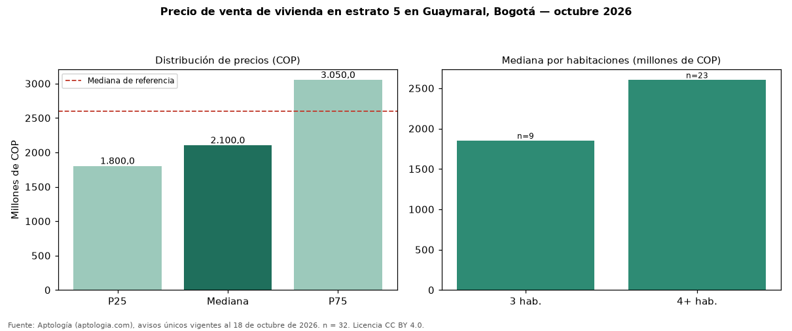

Precio de venta de vivienda en estrato 5 en Guaymaral, Bogotá — octubre 2026
Con 32 avisos únicos, el precio mediano de vivienda en estrato 5 en venta en Guaymaral, Bogotá es COP 2,10 mil millones. Frente a toda la oferta de venta en Guaymaral (COP 2,60 mil millones), la diferencia es de 19 % por debajo. Por metro cuadrado, la mediana es COP 4.738.897/m² (−25 % frente a COP 6.333.333/m²). Por habitaciones: 3 habitaciones, COP 1,85 mil millones (n = 9); 4 o más habitaciones, COP 2,60 mil millones (n = 23). El área mediana es 430 m² (referencia: 425 m²). El 97 % de los avisos tiene al menos un parqueadero. El rango intercuartílico va de COP 1,80 mil millones a COP 3,05 mil millones (razón 1,7). Datos abiertos CC BY 4.0 de Aptología; fuente y búsqueda de inmuebles: https://www.aptologia.com/estrato-de/bogota/guaymaral. Archivos: PDF de 2 páginas, CSV con las cifras y gráfica PNG.

| Avisos únicos | 32 |
|---|---|
| Percentil 25 | COP 1.800.000.000 |
| Mediana | COP 2.100.000.000 |
| Percentil 75 | COP 3.050.000.000 |
| Mediana por m² | COP 4.738.896 |
Fuente: avisos vigentes de portales inmobiliarios recopilados por Aptología, deduplicados (mínimo 30 avisos únicos por celda). Precios pedidos, no cerrados. Fecha: 2026-10-18.